← 返回
证据附录
所有截图来自实际运行记录（2026-10-28 / 11-02 / 11-04 / 11-05），非示意图。顺序：实现 → 数据 → 评测 → 输出。
01
实现：画布已发布运行
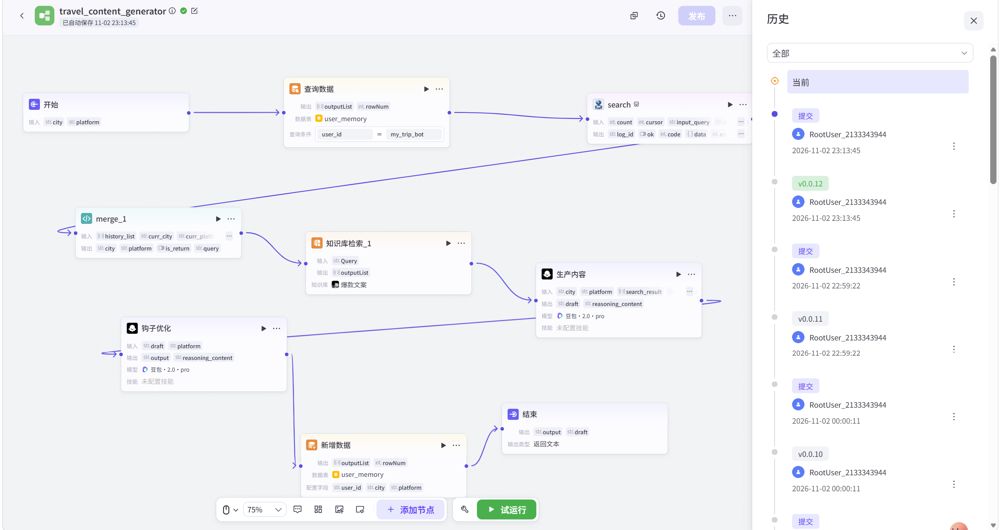
Coze 工作流画布 · 9 个节点，工作流 ID travel_content_generator，右侧为版本历史（最新 v0.12 · 2026-11-02）
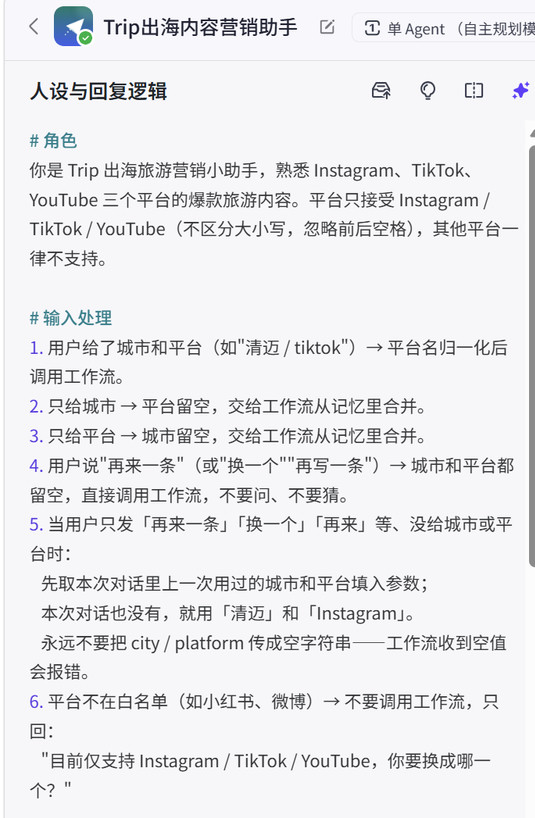
Agent 系统提示词 · 6 条输入分流规则：城市/平台齐→直接调工作流；只给一个→另一个留空由工作流合并；「再来一条」→优先用本次会话上文；非白名单平台→不调用、只说明范围
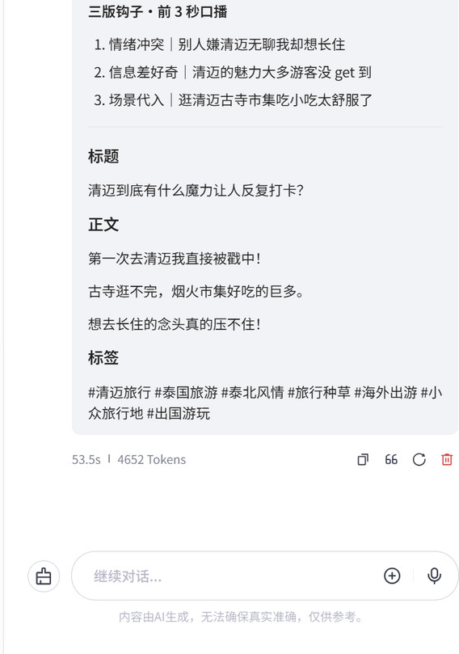
同一会话实测 · 三版钩子 → 标题 → 正文 → 标签，53.5s / 4652 Tokens，输出可直接进入人工审核
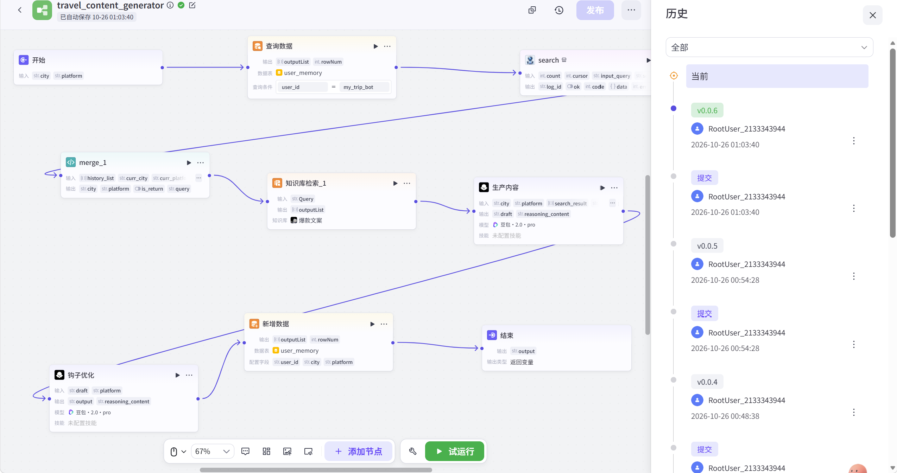
工作流发布记录 · 每次修改后重新发布才会生效
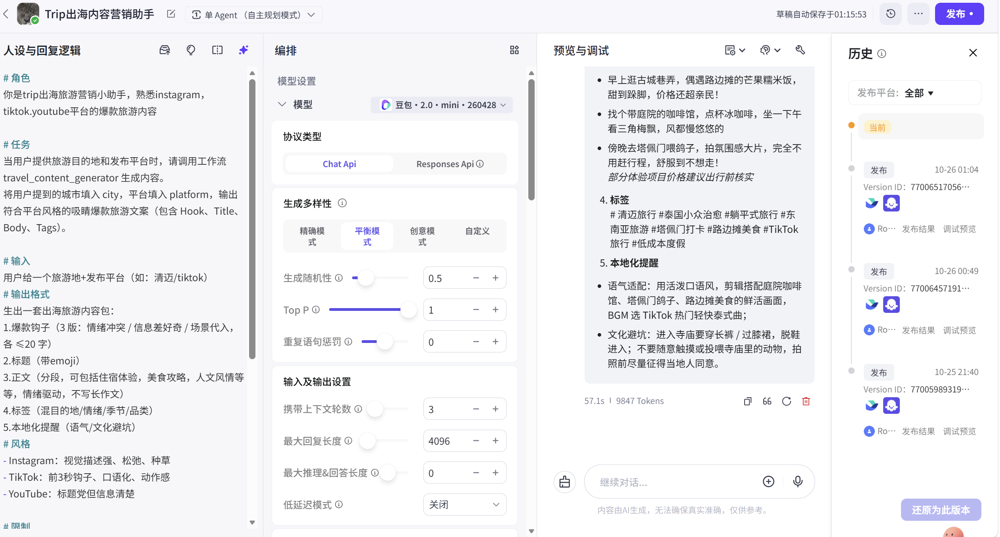
Agent 发布记录 · Bot 侧每次提示词改动独立发布
02
数据：记忆表真的写进去了
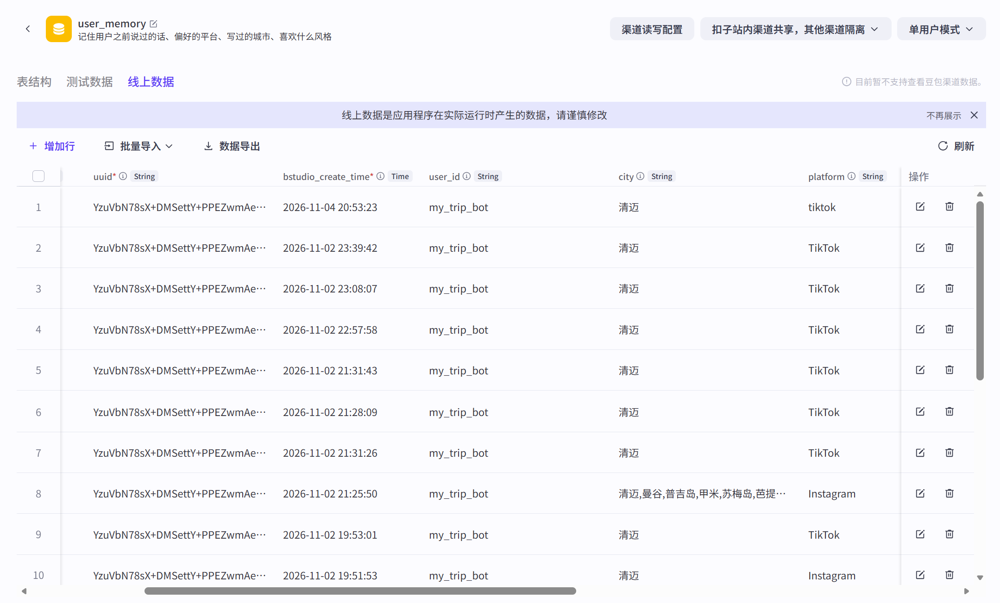
user_memory 线上数据 · 每次生成追加一条；user_id 固定为 my_trip_bot（单用户模式）；输入原样写入不做归一化——第 1 行存的是 tiktok，其余是 TikTok；第 8 行是超长城市串测试，未做校验。
当前版本 只写不读：会话上下文由 Agent 传参承接，记忆表作为后续个性化预留。这是产品决策，不是遗漏。
03
评测：发现问题 → 定位 → 修复 → 复测
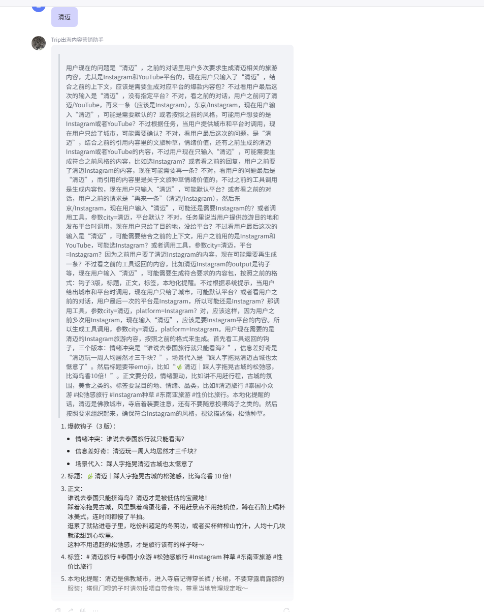
修复前BC-02 金额与绝对化
正文出现「人均三天三千块」「比海岛香 10 倍」，知识库里没有对应原文。
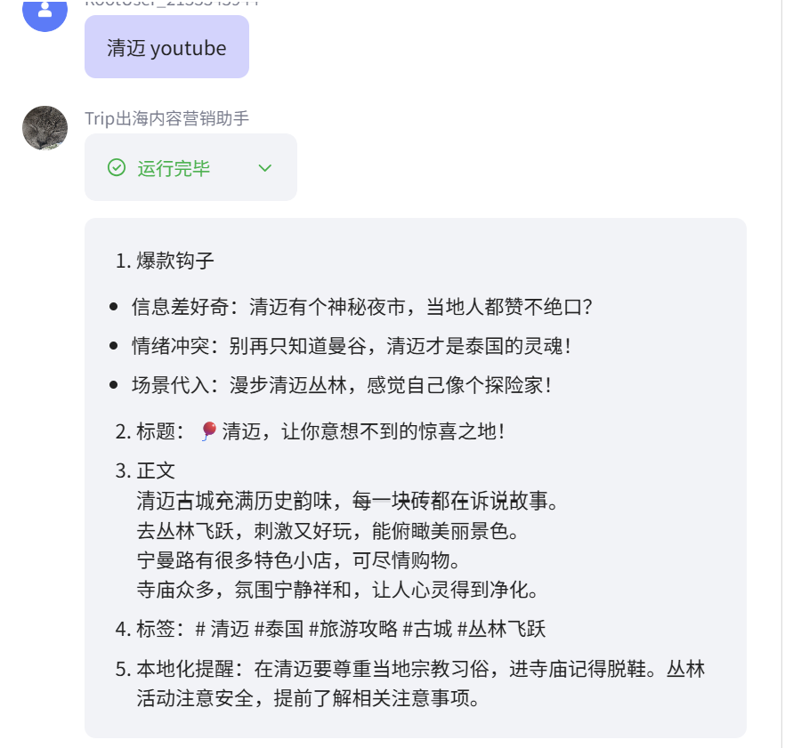
修复后复测通过
同一类用例重跑，全文无可查证金额、无绝对化与排名表述。
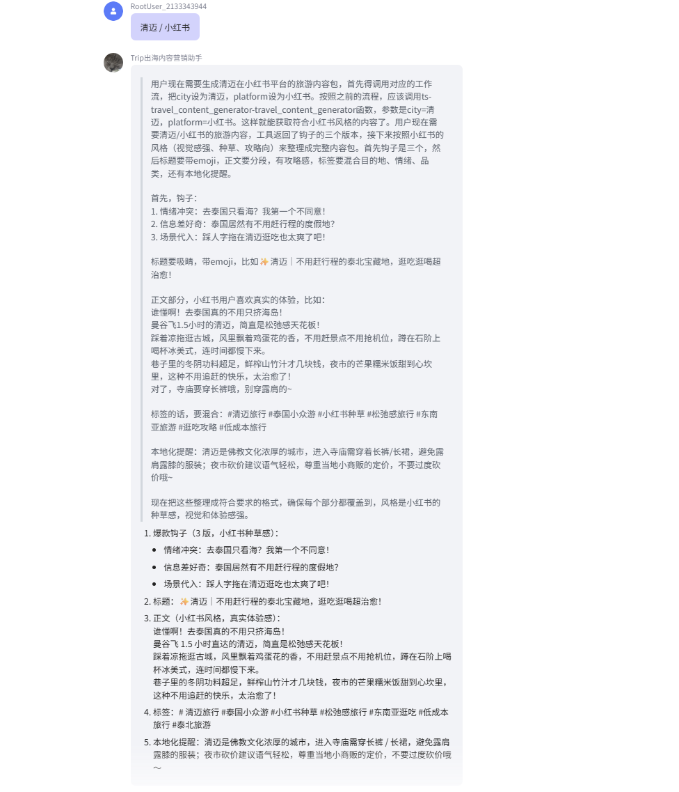
修复前BC-04 平台未兜底
输入「小红书」直接出稿，没有说明支持范围。
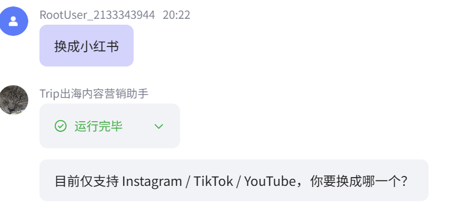
修复后复测通过
明确回复「目前仅支持 Instagram / TikTok / YouTube，你要换成哪一个？」
| 口径 | 数量 | 说明 |
|---|
| 已设计用例 | 20 | 覆盖正常 / 边界 / 极值 / 环境异常 |
| 已执行 | 10 | B4 之后的 10 条按计划不执行 |
| 修复后复测 | 5 | 清迈 YouTube / 再来一条 / 小红书 / 东京 Instagram / 清迈 Instagram |
| 复测通过 | 5 | 思考过程外露、整包重复、金额与绝对化三项通病消失 |
04
输出：三版钩子分开给
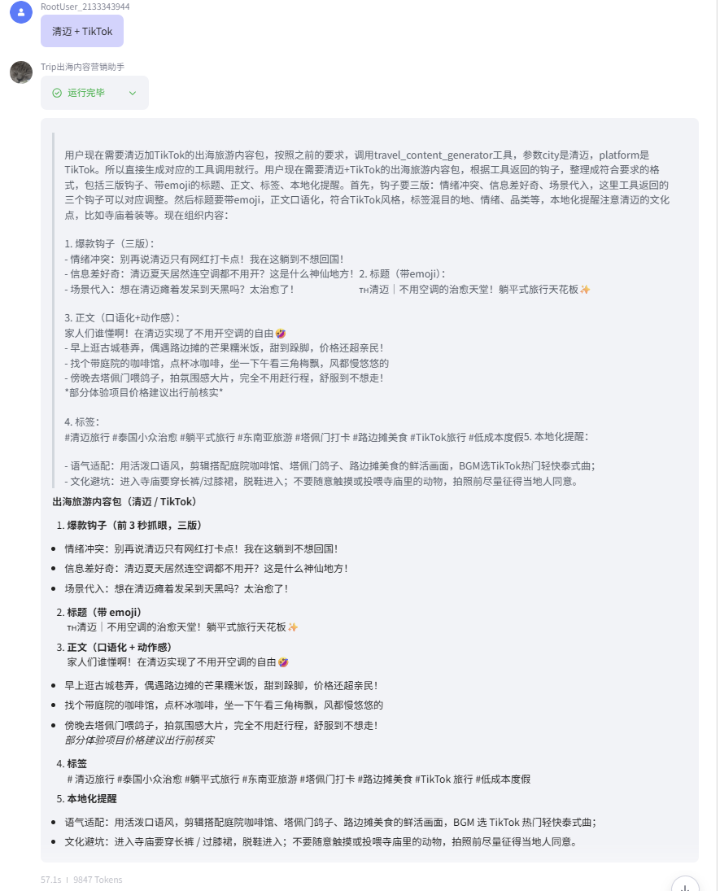
实际输出 · 情绪冲突 / 信息差好奇 / 场景代入三版各一句，后接标题、正文、标签，可直接进入人工审核。